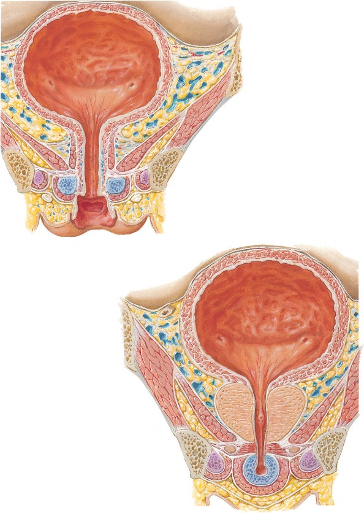

See also Plates 340, 344, 381

Parietal peritoneum
Fundus of bladder
Interureteric crest
Left ureteric orifice
Trigone of bladder
Neck of bladder
Paravesical endopelvic fascia
and vesical venous plexus
Vesical fascia
Tendinous arch of levator ani muscle
Obturator internus muscle
Levator ani muscle
Tendinous arch of pelvic fascia
Round
ligament
of uterus
Vagina
Urethra
Sphincter urethrae muscle
Perineal membrane
Inferior pubic ramus
Crus of clitoris and ischiocavernosus muscle
Bulb of vestibule and bulbospongiosus muscle
Deep perineal (investing or Gallaudet’s) fascia
Superficial perineal (Colles’) fascia
Parietal
peritoneum
Fundus of bladder
Ductus (vas) deferens
Interureteric crest
Right ureteric orifice
Trigone of bladder
Neck of bladder
Paravesical endopelvic fascia
and vesical venous plexus
Tendinous arch of levator ani muscle
Uvula of bladder
Obturator internus muscle
Levator ani muscle
Capsule of prostate
Prostate and prostatic urethra
Seminal colliculus
Bulbo-urethral (Cowper’s) gland
Perineal membrane and sphincter urethrae muscle
Bulbous portion of spongy urethra
Corpus spongiosum and bulbospongiosus muscle
Deep perineal (investing or Gallaudet’s) fascia
Internal
urethral
sphincter
Tendinous
arch of
pelvic
fascia
Anterior
recess of
ischio-
anal
fossa
Inferior
pubic
ramus
Crus of
penis and
ischiocaver-
nosus muscle
Superficial
perineal
(Colles’) fascia
Urinary Bladder: Female and Male